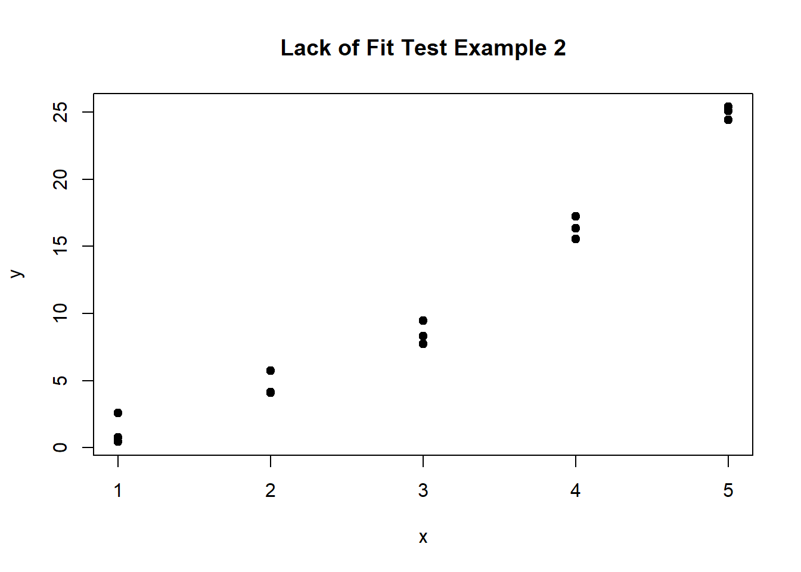
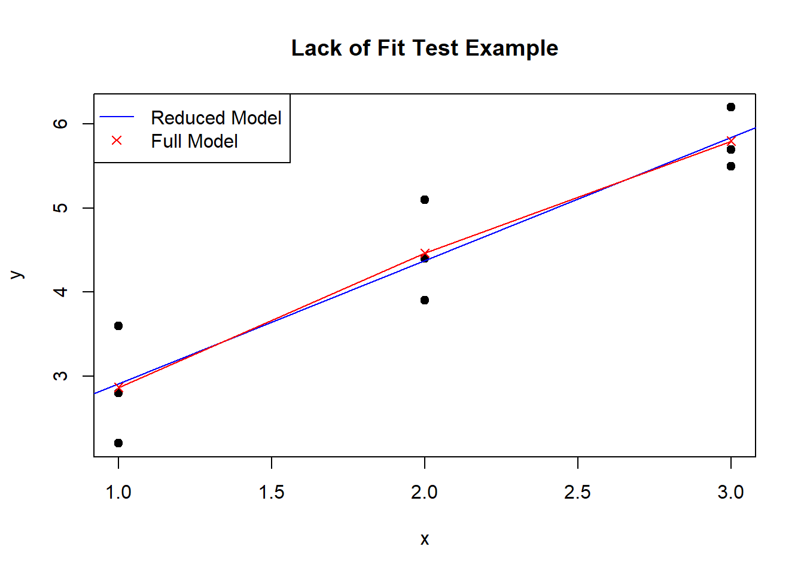
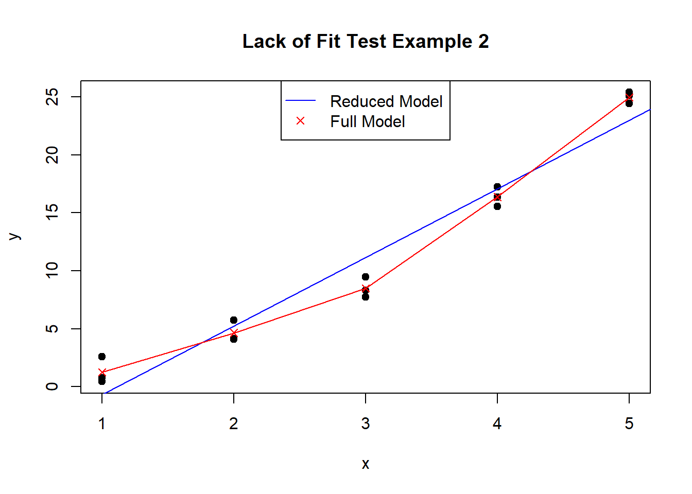
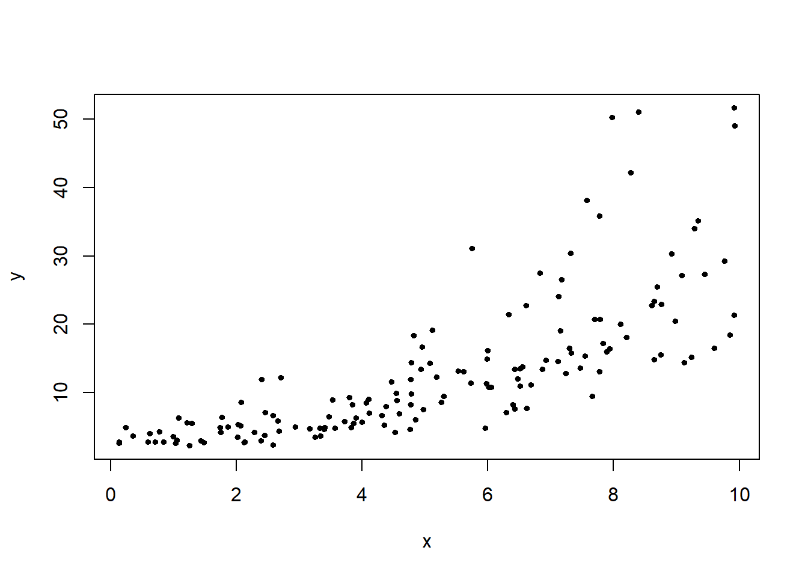
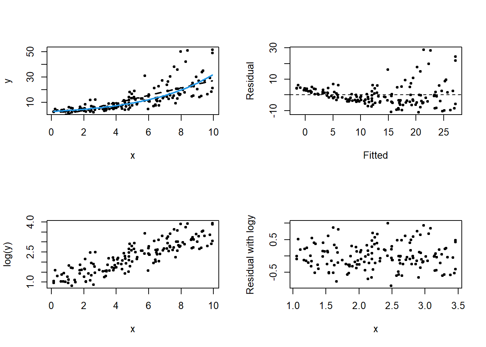
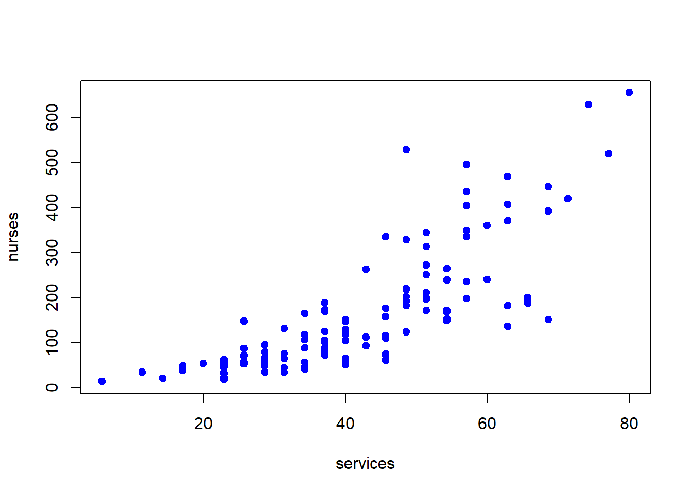
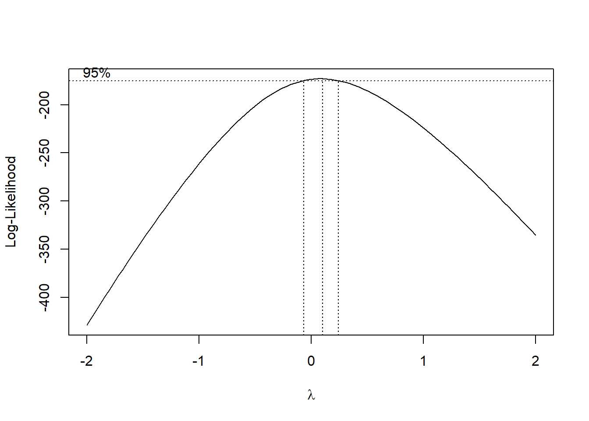

Lecture 02: CI, and hypothesis testing related to \(\beta_1\).
Lecture 03: Estimation and prediction.
Lecture 04: ANOVA.
Lecture 05: Diagnostics in SLR.
This lecture: data transformation and lack of fit test.
2 Lack of Fit Test
2.1 Lack of Fit Test in SLR
We have introduced visualization methods to check the linear model assumptions.
Goodness-of-fit tests (GOF) are often used to assess whether a statistical model/distribution fits the data well.
For example, the Chi-square goodness-of-fit test is used to test whether observed categorical data follow a specified distribution.
For simple linear regression, we consider the lack for fit test (LOF), which is an F-test, to test whether the linear regression model is a good fit for the data.
2.2 Lack of Fit Test in SLR: Notations
LOF test requires replicated \(x\) values (i.e., multiple \(y\) values for the same \(x\) value).
\(k\): the number of unique \(x\) values
\(n_i\): the number of replicates for the \(i\)th unique \(x\) value
\(n = \sum_{i=1}^k n_i\): the total number of observations.
\(y_{ij}\): the \(j\)th observation of the response variable \(y\) at the \(i\)th unique value of the predictor variable \(x\), where \(i = 1, 2, \ldots, k\) and \(j = 1, 2, \ldots, n_i\).
Code
set.seed(123)x <-rep(1:5, each=3)y <- x^2+rnorm(15, 0, 1) # true model is quadraticdata <-data.frame(x = x, y = y)# Reduced model: y_i = beta_0 + beta_1 x_i + epsilon_ifit_reduced <-lm(y ~ x, data = data)# Full model: y_i = mu_i + epsilon_ifit_full <-lm(y ~factor(x), data = data)plot(data$x, data$y, pch=19, xlab="x", ylab="y", main="Lack of Fit Test Example 2")

2.3 Lack of Fit Test in SLR
A LOF test compares two models:
Reduced model \(H_0\): \(y_{ij} = \beta_0 + \beta_1 x_i + \epsilon_{ij}\); assumes a linear relationship between \(x\) and \(y\).
Full model \(H_1\): \(y_{ij} = \mu_i + \epsilon_{ij}\), where \(\mu_i\) is the mean of the \(y\) values for the \(i\)th unique \(x\) value; uses a separate mean for each unique \(x\) value.
2.4 Lack of Fit Test in SLR: Sum of Squares
The reduced model (\(H_0\)), which is the SLR: \[SSE_R = \sum_{i=1}^k \sum_{j=1}^{n_i} (y_{ij} - \hat{y}_{ij})=(y_{ij}-\hat{\beta}_0 - \hat{\beta}_1 x_i)^2\] where \(\hat{\beta}_0, \hat{\beta}_1\) are the LSE of the SLR, and \(SSE_R\) is the SEE of the SLR.
The full model (\(H_1)\)): \[SSE_F = \sum_{i=1}^k \sum_{j=1}^{n_i} (y_{ij} - \bar{y}_i)^2\] where \(\bar{y}_i\) is the mean of the \(y\) values for the \(i\)th unique \(x\) value.
Which one is smaller? Why?
2.5 Lack of Fit Test in SLR: F-test
The full model has more parameters and thus fits the data at least as well as the reduced model. As a result, \(SSE_F \leq SSE_R\).
We can construct the following F-statistic to compare the SSEs: \[F = \frac{(SSE_R - SSE_F)/(df_R - df_F)}{SSE_F/df_F}\] where \(df_F\) and \(df_R\) are the degrees of freedom for the full and reduced models, respectively.
Under \(H_0\): the linear model fits the data well, \(F \sim F_{df_R - df_F, df_F}\).
plot(data$x, data$y, pch=19, xlab="x", ylab="y", main="Lack of Fit Test Example")abline(fit_reduced, col="blue")lines(data$x, fitted(fit_full), col="red", pch=4)points(data$x, fitted(fit_full), col="red", pch=4)legend("topleft", legend=c("Reduced Model", "Full Model"), col=c("blue", "red"), pch=c(NA, 4), lty=c(1, NA))

2.11 Interpretation of LOF: Example 1
The ANOVA table shows the comparison between the reduced and full models.
The plot shows the data points, the fitted line from the reduced model (in blue), and the fitted means from the full model (in red). They are very close to each other.
The p-value for the LOF test is 0.75, which is greater than the significance level of 0.05.
Therefore, we do not reject the null hypothesis and conclude that the linear model fits the data well.
2.12 LOF: Example 2
In this example, the true model is not linear
Code
set.seed(123)x <-rep(1:5, each=3)y <- x^2+rnorm(15, 0, 1) # true model is quadraticdata <-data.frame(x = x, y = y)# Reduced model: y_i = beta_0 + beta_1 x_i + epsilon_ifit_reduced <-lm(y ~ x, data = data)# Full model: y_i = mu_i + epsilon_ifit_full <-lm(y ~factor(x), data = data)anova(fit_reduced, fit_full)
Analysis of Variance Table
Model 1: y ~ x
Model 2: y ~ factor(x)
Res.Df RSS Df Sum of Sq F Pr(>F)
1 13 54.565
2 10 7.760 3 46.804 20.104 0.0001479 ***
---
Signif. codes: 0 '***' 0.001 '**' 0.01 '*' 0.05 '.' 0.1 ' ' 1
2.13 Visualize LOF: Example 2
Code
plot(data$x, data$y, pch=19, xlab="x", ylab="y", main="Lack of Fit Test Example 2")abline(fit_reduced, col="blue")lines(data$x, fitted(fit_full), col="red", pch=4)points(data$x, fitted(fit_full), col="red", pch=4)legend("top", legend=c("Reduced Model", "Full Model"), col=c("blue", "red"), pch=c(NA, 4), lty=c(1, NA))

2.14 Interpretation of LOF: Example 2
The ANOVA table shows the comparison between the reduced and full models.
The plot shows the data points, the fitted line from the reduced model (in blue), and the fitted means from the full model (in red). They are quite different.
The p-value for the LOF test is 0.0001, which is less than the significance level of 0.05.
Therefore, we reject the null hypothesis and conclude that the linear model does not fit the data well.
2.15 LOF Test: When replicated x values are not available
When there is no replicated \(x\) values, we cannot perform the LOF test.
There are several options. For example, Linear vs polynomial (quadratic/cubic)
Code
set.seed(12)x=seq(1, 10, by=0.5)y=(x-3)^2+rnorm(length(x), 0, 2)d=data.frame(x, y)fit_lin <-lm(y ~ x, data = d)fit_poly2 <-lm(y ~ x +I(x^2), data = d)fit_poly3 <-lm(y ~ x +I(x^2) +I(x^3), data = d)anova(fit_lin, fit_poly2)
Analysis of Variance Table
Model 1: y ~ x
Model 2: y ~ x + I(x^2)
Res.Df RSS Df Sum of Sq F Pr(>F)
1 17 1008.50
2 16 46.65 1 961.85 329.92 4.202e-12 ***
---
Signif. codes: 0 '***' 0.001 '**' 0.01 '*' 0.05 '.' 0.1 ' ' 1
2.16
Code
anova(fit_lin, fit_poly3)
Analysis of Variance Table
Model 1: y ~ x
Model 2: y ~ x + I(x^2) + I(x^3)
Res.Df RSS Df Sum of Sq F Pr(>F)
1 17 1008.50
2 15 46.37 2 962.13 155.62 9.315e-11 ***
---
Signif. codes: 0 '***' 0.001 '**' 0.01 '*' 0.05 '.' 0.1 ' ' 1
Code
anova(fit_poly2, fit_poly3)
Analysis of Variance Table
Model 1: y ~ x + I(x^2)
Model 2: y ~ x + I(x^2) + I(x^3)
Res.Df RSS Df Sum of Sq F Pr(>F)
1 16 46.647
2 15 46.370 1 0.27721 0.0897 0.7687
When one or several assumptions of the linear model are violated, what can we do?
Consider more complex models. For example,
If the relationship between \(x\) and \(y\) is not linear, we may consider polynomial regression or other types of regression (e.g., spline regression, generalized additive models).
If the variance of the errors is not constant, we may consider weighted least squares or generalized least squares.
We may consider data transformation.
Next, we present how to transform the data to address non-linearity or non-constant variance.
3 Data Transformation
3.1 Data Transformation: General Rules
Transformations are often used to achieve linearity, constant variance, and normality of errors.
Transform \(x\) or \(y\)?
Not linear: If the relationship between \(x\) and \(y\) is not linear but residuals are generally normal and have constant variance, we may consider transforming \(x\).
Not constant variance: If the variance of \(y\) varies with \(x\), consider transforming \(y\) (e.g., log or square root).
If both the relationship and the variance are problematic, we may consider transforming \(y\) to stabilize variance first and then try transforming \(x\).
3.2 Data Transformation: General Rules
Common transformations include:
Logarithmic transformation: \(y' = \log(y)\) or \(x' = \log(x)\)
Square root transformation: \(y' = \sqrt{y}\) or \(x' = \sqrt{x}\)
Reciprocal transformation: \(y' = 1/y\) or \(x' = 1/x\)
Box-Cox transformation: a family of power transformations that includes the above as special cases.
The choice of transformation depends on the specific characteristics of the data and the goals of the analysis.
3.3 Example 1
Code
set.seed(1)n <-150x <-runif(n, 0, 10)beta0 <-1; beta1 <-0.25; sigma <-0.4y <-exp(beta0 + beta1*x +rnorm(n, 0, sigma)) # multiplicative noise# Fit wrong scale (linear on original y) vs right scale (linear on log y)fit_bad <-lm(y ~ x)fit_logy <-lm(log(y) ~ x)## Plot 1: Data + fitted lines on original scaleplot(x, y, pch =19, cex = .6, xlab ="x", ylab ="y")

Transform \(x\) or \(y\)? Why?
3.4 Example 1: : Original vs Transformed
Code
set.seed(1)n <-150x <-runif(n, 0, 10)beta0 <-1; beta1 <-0.25; sigma <-0.4y <-exp(beta0 + beta1*x +rnorm(n, 0, sigma)) # multiplicative noise# Fit wrong scale (linear on original y) vs right scale (linear on log y)fit_bad <-lm(y ~ x)fit_logy <-lm(log(y) ~ x)par(mfrow=c(2,2))## Plot 1: Data + fitted lines on original scaleplot(x, y, pch =19, cex = .6, xlab ="x", ylab ="y")ord <-order(x)lines(x[ord], fitted(fit_bad)[ord], lwd =2, lty =2)# Back-transform the log-fit (median fit on y-scale)lines(x[ord], exp(fitted(fit_logy))[ord], lwd =2, col =4)#legend("topleft", bty = "n", lwd = 2, lty = c(2,1), col = c(1,4),# legend = c("Linear on y (misspecified)", "exp{ linear on log(y) }"))## Plot 2: Residual diagnosticsplot(fitted(fit_bad), resid(fit_bad), pch =19, cex = .6,xlab ="Fitted",ylab ="Residual")abline(h =0, lty =2)# Heteroscedastic fan shape expected for fit_badplot(x, log(y), pch =19, cex = .6,xlab ="x", ylab ="log(y)")plot(fitted(fit_logy), resid(fit_logy), pch =19, cex = .6,xlab ="x", ylab ="Residual with logy")

Code
par(mfrow=c(1,1))
Transform \(x\) or \(y\)? Why?
3.5 Example 2: SENIC
Code
senic=read.csv("../data/SENIC.csv")#scatter plot services on nursesplot(senic$services, senic$nurses,pch=19, col="blue",xlab="services",ylab="nurses")

A random sample of 113 hospitals taken from a Study in the Efficacy of Nosocomial Infection Control (SENIC Project).
nurses: Average number of full-time equivalent registered and licensed practical nurses
service: Percent of 35 potential facilities and services provided by the hospital
fit <-lm(log10(cycleLife) ~log10(DeltaQvar), data = battery)summary(fit)
Call:
lm(formula = log10(cycleLife) ~ log10(DeltaQvar), data = battery)
Residuals:
Min 1Q Median 3Q Max
-0.107697 -0.056378 0.009384 0.056817 0.103507
Coefficients:
Estimate Std. Error t value Pr(>|t|)
(Intercept) 1.44364 0.09990 14.45 <2e-16 ***
log10(DeltaQvar) -0.37281 0.02718 -13.72 <2e-16 ***
---
Signif. codes: 0 '***' 0.001 '**' 0.01 '*' 0.05 '.' 0.1 ' ' 1
Residual standard error: 0.06424 on 39 degrees of freedom
Multiple R-squared: 0.8283, Adjusted R-squared: 0.8239
F-statistic: 188.2 on 1 and 39 DF, p-value: < 2.2e-16
Interpretation of the slope: A 1% increase in DeltaQvar is associated with an approximate ___ decrease in cycleLife, on average.
4 Box-Cox Transformation
4.1 Box-Cox Transformation
Box-Cox transformation is defined as: \[
y^{(\lambda)} = \begin{cases}
\frac{y^\lambda - 1}{\lambda}, & \lambda \neq 0 \\
\log(y), & \lambda = 0
\end{cases}
\] E.g., when \(\lambda=0.5\), it is a square root transformation, i.e., \(y'=\sqrt{y}\).
How to find \(\lambda\)? Box-Cox transformation finds the optimal \(\lambda\) by maximizing the log-likelihood function.
\[y_i^{(\lambda)} = \beta_0 + \beta_1 x_i + \epsilon_i, \quad \epsilon_i \overset{iid}\sim N(0, \sigma^2)\] - The fucntion ``boxcox’’ in MASS package in R can be used to find the optimal \(\lambda\).
4.2 Box-Cox Transformation for SENIC Data
In this example, the optimal value of \(\lambda\) is around 0, which suggests a log transformation on y.
Code
library(MASS)senic=read.csv("../data/SENIC.csv")senic_fit <-lm(nurses ~ services, data = senic)boxcox(senic_fit, lambda =seq(-2, 2, by =0.1),xlab =expression(lambda),ylab ="Log-Likelihood",main ="Box-Cox Transformation for SENIC Data")

4.3 Box-Cox Transformation for SENIC Data
Code
library(MASS)senic_fit <-lm(nurses ~ services, data = senic)boxcox(senic_fit, lambda =seq(-2, 2, by =0.1),xlab =expression(lambda),ylab ="Log-Likelihood",main ="Box-Cox Transformation for SENIC Data")